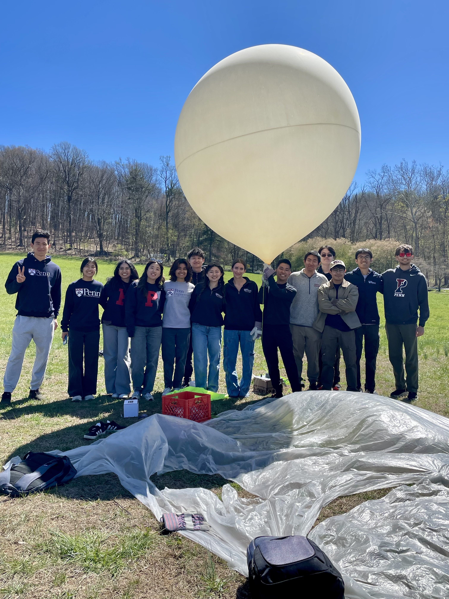
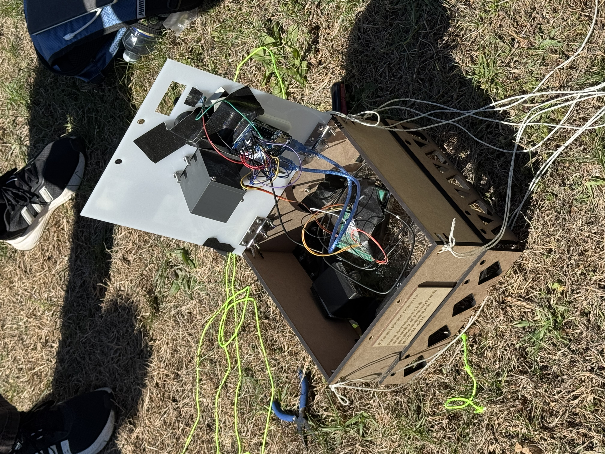
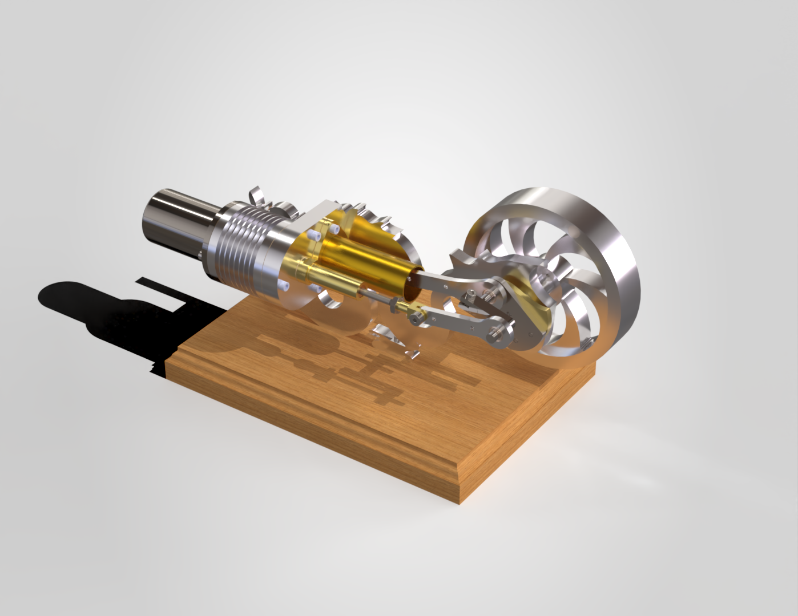
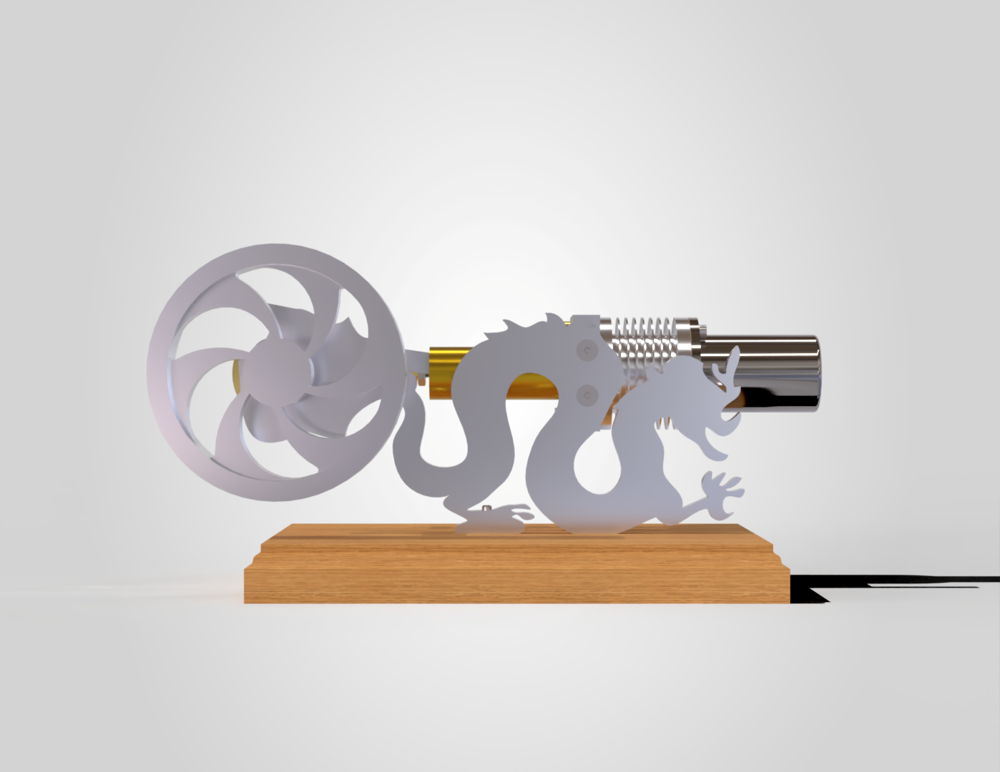
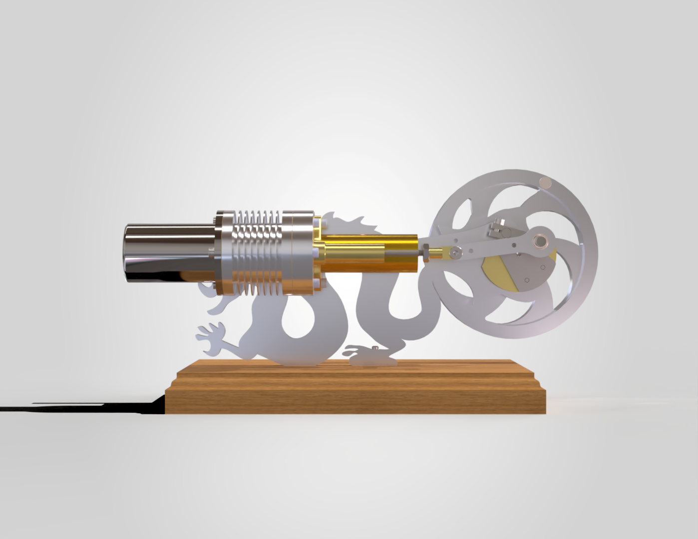
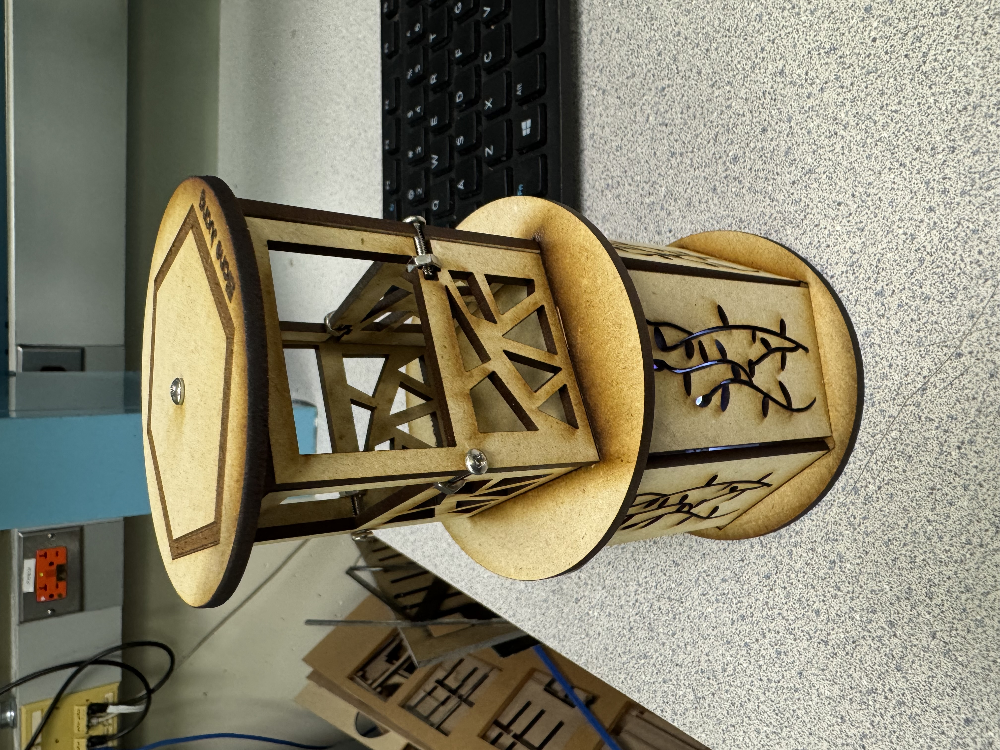
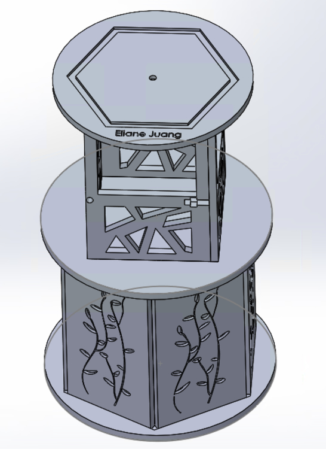

Undergraduate student at the University of Pennsylvania studying mechanical engineering and minoring in engineering entrepreneurship. Interested in product design and management, medical devices, and aerospace.
Liebau Underwater Soft Robot Project
Mitral Valve Project
Therapeutic Spirometer
Tunnel Boring Machine
High-Altitude Balloon Project


Novick Urban Farms Planter Box Project





Assembled using T-slot, press-fit, and lap joints